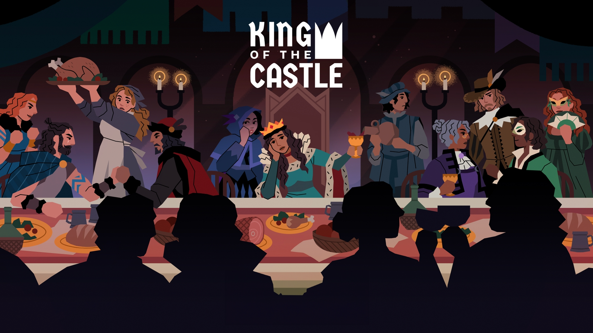
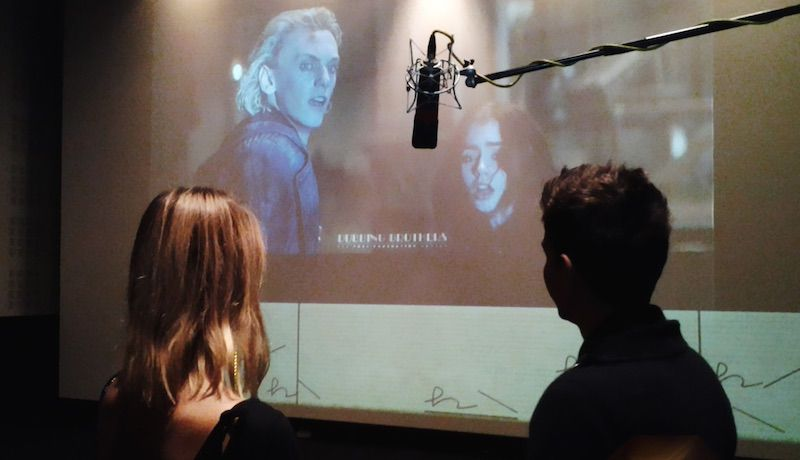

Mes expériences des LAN Parties
Lan n° 2
LAN Party - Mars 2024
Nous sommes le 2 Mars 2024. C'est le jour de la deuxième LAN, nous sommes tous très excités. Les invités sont à nouveau : mes amis et deux nouveaux dont un qui est venu de Paris juste pour cette journée. Nous nous étions un peu plus préparé cette fois ci. On a prévu à l'avance les jeux auxquels on allait jouer. Les logiciels qu'on allait utiliser ont été mis à jour. Pour plus de souvenir nous avons filmé à la GoPro l'installation de la LAN, c'est-à-dire l'arrivée des invités, l'installation de tous les pc.
Les jeux auxquels j'ai joués à cette LAN sont : Valorant, Kink of The Castle, Lethal Compagny, du doublage.
Valorant pour rappel c'est dans le même style que les counter-strike dans les années 2000. Deux équipes de 5 joueurs s'affrontent, une équipe qui doit poser un spike sur un site et l'autre équipe doit tout faire pour les en empêcher.

King of the Castle est un jeu de rôle multijoueur en ligne où les joueurs incarnent des nobles dans un royaume médiéval fictif. Dans ce jeu, un joueur assume le rôle du monarque, tandis que les autres jouent des nobles issus de différentes factions, chacune ayant ses propres objectifs et ambitions politiques. Le jeu est centré sur la prise de décisions stratégiques, les négociations, et les complots pour influencer le destin du royaume.  Les choix du roi influencent l’avenir du royaume, mais les nobles tentent souvent de renverser la monarchie ou de promouvoir leurs propres intérêts.
Lethal Compagny est un jeu d'horreur coopératif en multijoueur où les joueurs incarnent des employés d’une entreprise envoyés dans des bâtiments abandonnés pour y récupérer des objets de valeur. Le danger ? Des créatures hostiles rôdent, chacune ayant des comportements spécifiques qu'il faut comprendre pour survivre. La coopération et la discrétion sont essentielles, car un seul faux pas peut mettre toute l’équipe en danger!

Doublage pour ce qui est du doublage le principe est simple, on prend un extrait de film, on coupe les voix et on fait défiler un bandeau avec les scripts de ce que disent les acteurs, mais avec nos voix! Cela donne des situations assez "rigolotes" puisque par exemple si vous doublez "The Rock" (Dwayne Johnson) qui est assez balaise physiquement parlant. Eh ben si vous avez une voix par exemple aigue et que vous le doublez cela peut-être très hillarant ! 
Nous avons doublé les films Jumanji, Les Bronzés font du ski, Kuzco, Retour vers le futur, le Chat Potté 2, Monstre Academy, Moi Moche et Méchant...